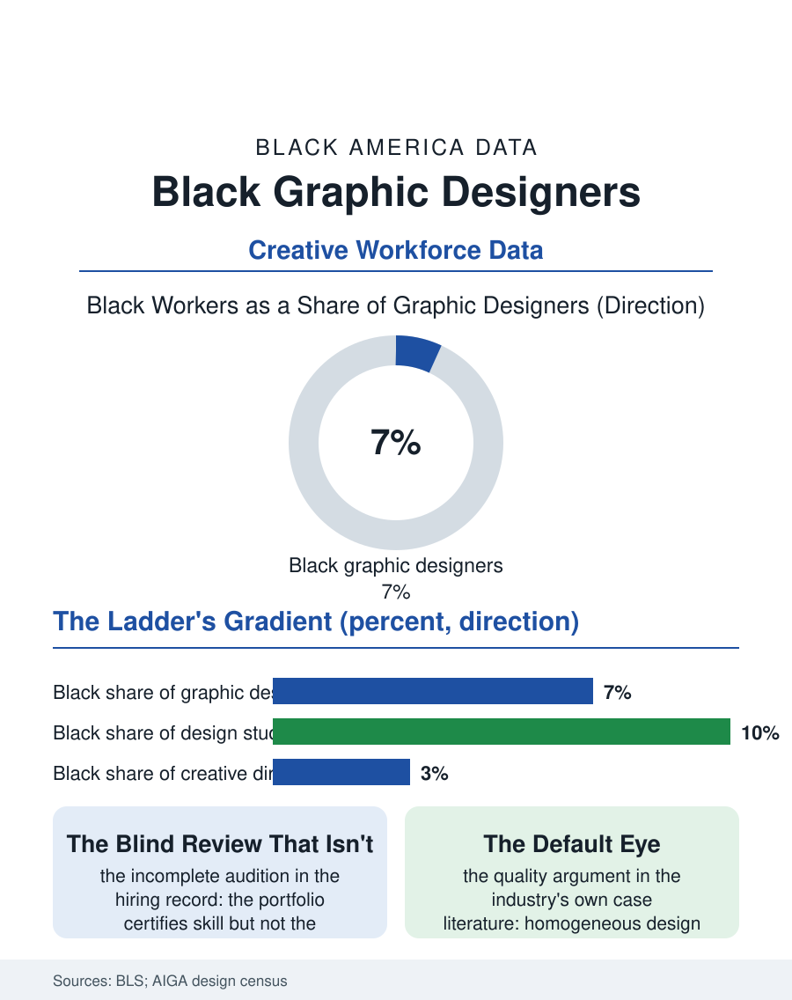

Black Employment
The Default Eye: Black Graphic Designers
Design hires by portfolio, yet Black designers hold a small share of jobs and a smaller share of creative direction, in a field whose product is audience judgment. The design file.

Graphic design is where the creative economy meets the keyboard, and its workforce, about a quarter million strong in the federal counts, is among the whiter of the digital professions: Black designers hold roughly six or seven of every hundred jobs, in a field whose product, the visual language of American brands, speaks to audiences designers of color know most intimately. This article reads the design file, from the portfolio door to the creative director's office.
The Portfolio Is the Credential
Design hires by portfolio, a body of work reviewed in minutes, which makes the occupation an interesting case in this atlas's long argument about auditions. The portfolio's neutrality is real but incomplete: it certifies skill while concealing neither schooling nor software access nor the unpaid internship summers in which portfolios are built. The pipeline data show the sorting early: design programs at art schools and universities enroll Black students below their share, the community college and self-taught routes carry a larger Black share of entrants than the credentialed route, and the industry's agency tier, concentrated in New York, Los Angeles, and Chicago, recruits through the art-school networks accordingly. Inside the field, the distribution by specialty records the familiar gradient: production design and print work more diverse, the brand and digital product tiers less, and the creative director level, the occupation's summit where visual authority actually sits, least of all, with the industry surveys placing Black creative leadership in the low single digits. The freelance economy overlays everything: a large share of designers work contract or independent, and the platform economy's race-to-the-bottom bidding on commodity work contrasts with the referral economy of brand studios, where Black designers report in the trade surveys the same pattern as every professional file here, skill legible, network decisive.
Whose Eye Is the Default
Design's product is judgment about audiences, and the file's substantive argument is that the workforce's composition is a quality variable, not only an equity one. The industry's own case literature is blunt about the cost of homogeneous rooms: campaigns withdrawn after public offense that a single differently-experienced reviewer would have caught, product interfaces whose imagery and language defaults misread the customers they court, and stock libraries and illustration styles that define the visual normal from a narrow base. The counter-economy is the Black design world's own infrastructure: the professional organizations of Black designers, the conference and mentorship circuits, the studios founded by Black creative directors whose client lists include the corporations seeking the audiences those studios understand natively, and the HBCU design programs, several of them historically strong, feeding graduates into agencies that once never recruited there. Brand-side hiring, inside corporations rather than agencies, has been the most dynamic tier in the recent workforce data, as companies build in-house studios and recruit design leadership to own the customer relationship, a shift that has created some of the most senior Black design roles in the industry's history, though the numbers remain thin enough that the trade press still chronicles individual appointments as news.
The Machine in the Studio
Generative image tools have arrived in design the way automation arrived in welding in this atlas's earlier file, first at the production tier. Commodity layout and resizing work is compressing, repricing the ladder's bottom rungs where Black designers are most concentrated, while the strategy, brand systems, and direction tiers, where the field's value and its diversity problems both concentrate, remain judgment work. The training pipeline is responding the way the welding programs did, teaching direction of the tools as a core skill, which makes the composition of the training rooms doubly consequential: the generation that learns to direct the machines will hold the occupation's commanding heights for thirty years. The design file closes on the portfolio table, where this occupation makes its one undeniable contribution to the atlas's theory of fairness: the work itself, reviewed blind, would sort more fairly than the profession does, and the distance between what the portfolios would earn and what the profession pays is the measurement of everything around the work, the schools, the summers, the networks, the rooms. The portfolios are ready. The file records a profession still deciding whether to judge them in the open, where Black designers have always asked to be judged, or in the anteroom, where they have always actually been sorted.
More in Black Employment
The Black Unemployment Rate: The Two-to-One Pattern
Black unemployment runs at roughly twice the White rate — 5.5 percent against 3.3 percent in annual averages — a ratio stable across five decades of federal data. How it is measured and why it persists.
Black Median Weekly Earnings: The 80-Cent Ratio
Black full-time workers earn a median of about $900 a week — roughly 80 cents for every dollar White workers earn. The BLS earnings data by group, gender, and occupation.
Black Labor Force Participation: Working at National Rates
Black labor force participation runs at roughly the national rate — and Black women participate at higher rates than White women. The BLS participation data.
Source: U.S. Bureau of Labor Statistics, Current Population Survey; AIGA Design Census; professional organization workforce surveys.